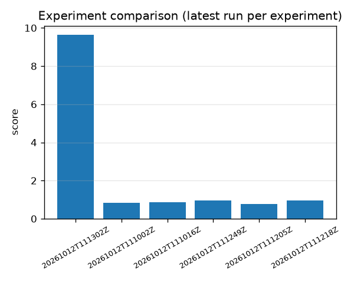

Latest run per experiment · generated from models/runs · all leakage gates pass (recording/engine-level disjoint splits)
| Variant | Accuracy | Macro F1 | Note |
|---|---|---|---|
| 1D CNN (raw) | 0.878 | 0.468 | misses all 12 healthy test windows |
| SE-TCN (raw) | 0.757 | 0.555 | only variant that recalls the healthy class (1.000) |
| STFT spectrogram CNN | 0.958 | 0.489 | tied best; time-frequency input wins |
| CWT spectrogram CNN | 0.958 | 0.489 | tied best; time-frequency input wins |
Honest caveat: with only 4 healthy CWRU recordings, test slices are fault-heavy, so the majority-class baseline looks strong on accuracy. Macro F1 exposes the real gap — all variants must improve healthy-class recall.

$env:PYTHONPATH="src"; python -m fluxguard.pipelines.run_experiment run --config configs/cwru_anomaly.json
$env:PYTHONPATH="src"; $env:FLUXGUARD_MODELS_ROOT="models/runs"; python -m uvicorn fluxguard.api.app:app — then GET /health, POST /api/anomaly/score, POST /api/fault/predict, POST /api/rul/predict.